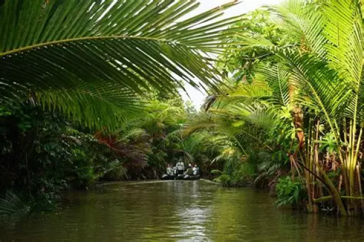
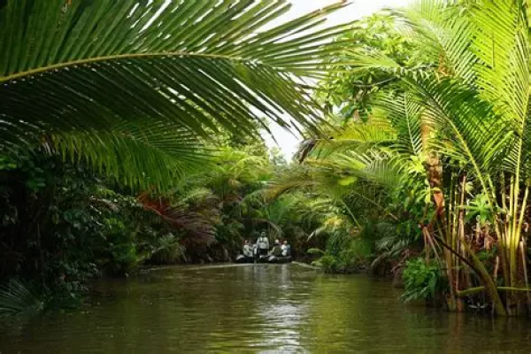

Plongez dans une aventure inoubliable le long de la Sepik River, l'un des derniers écosystèmes d'eau douce préservés de notre planète. La région constitue un véritable sanctuaire pour la biodiversité, abritant une grande variété d'espèces animales et végétales rares. Naviguer le long de la Sepik River vous offrira l'opportunité de découvrir des villages traditionnels isolés, de participer à des échanges culturels et d'admirer l'art et l'artisanat locaux, y compris les célèbres sculptures en bois de la région.
 



Les excursions en canoë sur la Sepik vous permettront d'explorer les zones les plus reculées de la rivière, où la nature est à son apogée, vous offrant des paysages à couper le souffle, des couchers de soleil spectaculaires et des rencontres inoubliables avec la faune sauvage. Découvrir la Sepik River vous plongera au cœur d’une nature sauvage et d’une culture tribale fascinante. Si vous rêvez d'explorer des régions reculées et de vous immerger dans la beauté naturelle de notre planète, la Sepik River est une destination incontournable.
Durant les trois jours que nous vous proposons de passer au bord de cette rivière vous pourrez en consacrer une pour naviguer à bord de canoë. La navigation s’effectue le long de la magnifique forêt qui entoure la rivière et ces habitations. Vous pourrez également consacrer une journée pour aller à la découverte des cultures locales, découvrir la façon dont ils manient le bois. Cette vous permettra de tisser des liens forts avec les habitants de ces villages.
Voici une séléction de solutions d’hébergements pour votre séjour a Sepik River. Cette sélécion comprends des logements de plusieurs types afin que vous puissiez loger dans un endroit qui vous plaise, peu importe vos préférences personelles.
Ninamu Resort (éco-lodge)
Karawari (Lodges)
Paradise New Wewak (Hôtel)
De même que pour les hébergements, nous vous proposerons ici plusieurs restaurants locaux, afin que vous puissier manger ce qui vous chante, quels que soient vos goûts !
Lakwi Kai (Bar, restaurant)
Madang Club
Vous pourrez prendre un bus entre l’aérport de Johannesbourg et le Parc Kruger, afin de vous y rendre.
| Moyen de Transport | Distance | Durée du trajet | Escale(s) |
Prix | Emission Carbone |
|---|---|---|---|---|---|
| Avion |
4788km |
21h25 |
2 | 1248€ |
663kg |